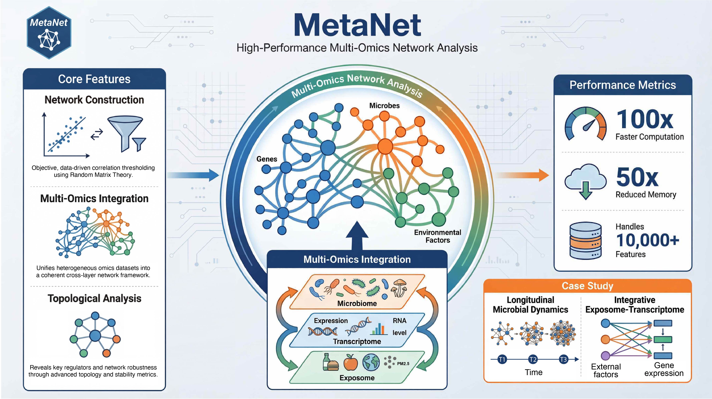
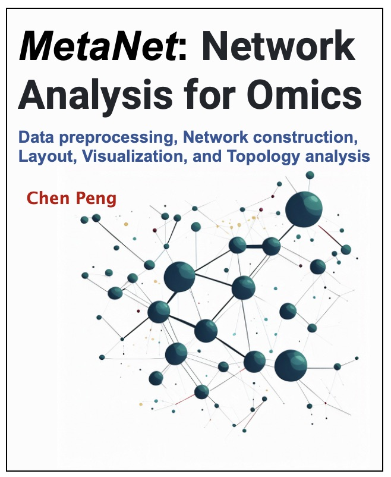
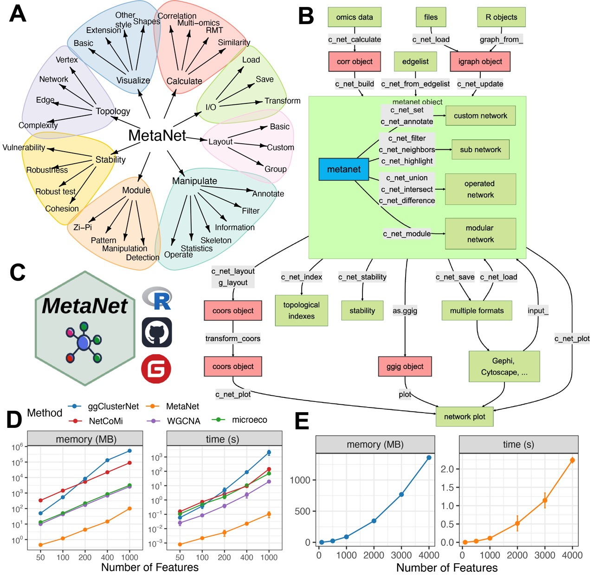
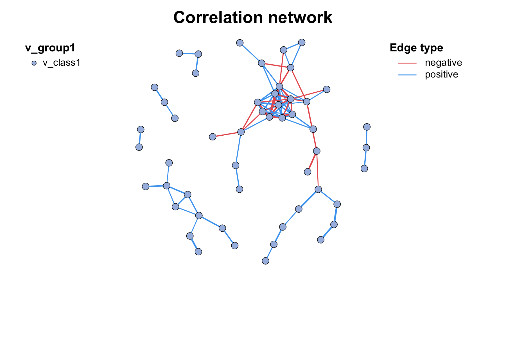
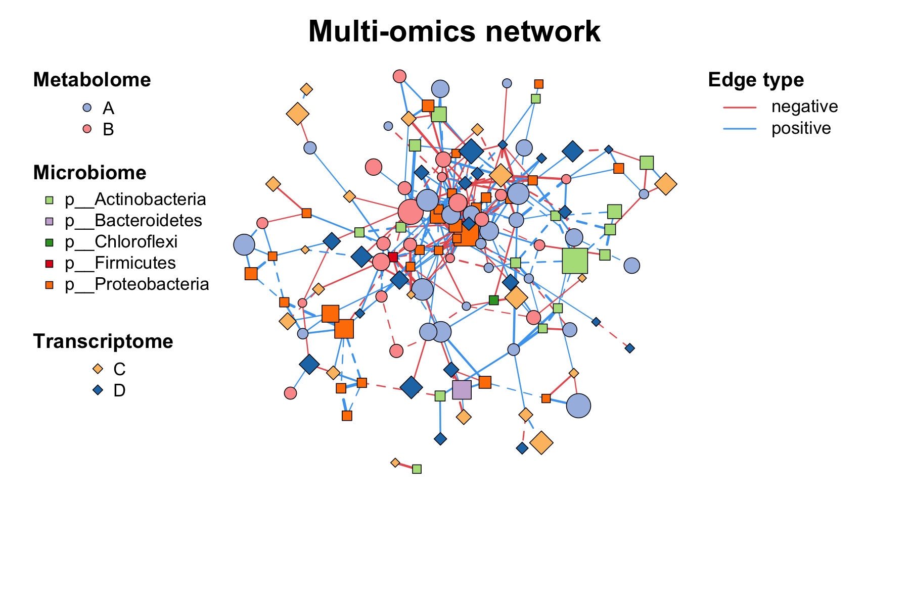
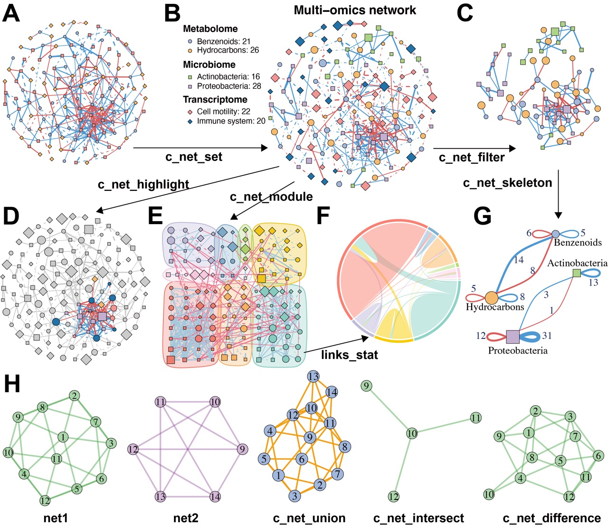
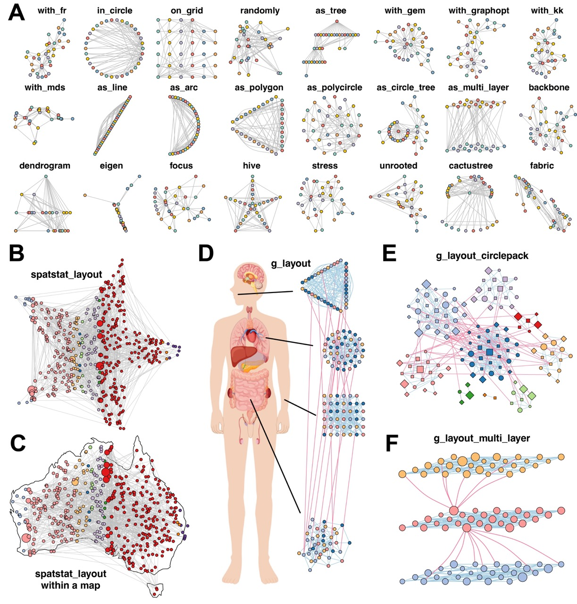
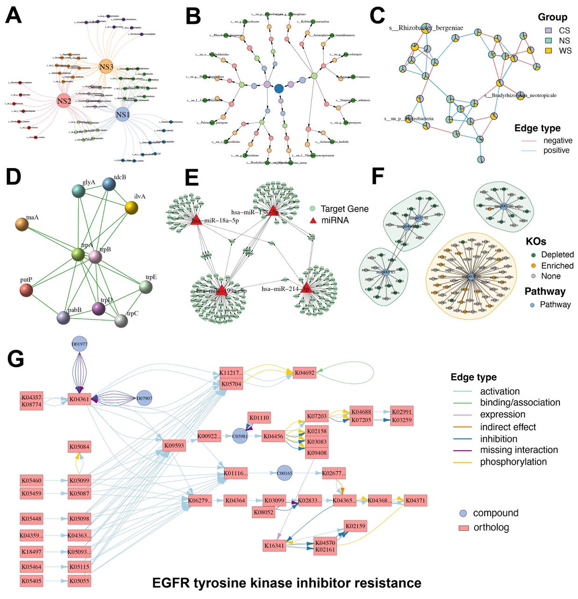

MetaNet, a high-performance R package that unifies network construction, visualization, and analysis across diverse omics layers.
MetaNet enables fast and scalable correlation-based network construction for datasets with more than 10,000 features, providing over 40 layout algorithms, rich annotation utilities, and visualization options compatible with both static and interactive platforms. It further offers comprehensive topological and stability metrics for in-depth network characterization. Benchmarking shows that MetaNet delivers up to a 100-fold improvement in computation time and a 50-fold reduction in memory usage compared to existing R packages.

The HTML documentation of the latest version is available at Github page.
Citation
Please cite:
- Peng, C. et al. MetaNet: a scalable and integrated tool for reproducible omics network analysis. 2025.06.26.661636 Preprint at https://doi.org/10.1101/2025.06.26.661636 (2025).
Installation
You can install the released version of MetaNet from CRAN with:
install.packages("MetaNet")You can install the development version of MetaNet from GitHub with:
# install.packages("devtools")
devtools::install_github("Asa12138/MetaNet")Tutorial
Please go to https://bookdown.org/Asa12138/metanet_book/ for the full vignette.

MetaNet is an R-based integrative package designed for comprehensive network analysis across diverse omics data, including multi-omics datasets. MetaNet is compatible with operating systems (Windows, macOS, and Linux) that support R version 4.0 or higher, and its core functionality is built upon the widely used igraph package. Its architecture comprises several core functional modules: Calculation, Manipulation, Layout, Visualization, Topology analysis, Module analysis, Stability analysis, and I/O (Figure 1A), supporting the end-to-end analytical process from network construction to visualization. Figure 1B illustrates the main workflow and essential components within MetaNet.
Pairwise correlation computation is central to most network-based omics tools, but the growing scale of omics datasets imposes substantial computational demands. MetaNet addresses this through optimized vectorized matrix algorithms for calculating correlation coefficients and corresponding p-values, greatly reducing memory use and runtime (Figure 1D).

Figure 1. Overview of the MetaNet workflow and its high-efficiency computation.
Quick Start
Simply build and draw a co-occurrence network plot, only need to use c_net_calculate(), c_net_build(), c_net_plot() three functions:
library(pcutils)
library(MetaNet)
data("otutab", package = "pcutils")
# Inter-species correlation coefficients were calculated after transposition
totu <- t2(otutab[1:70, ])
cor <- c_net_calculate(totu)
net <- c_net_build(cor, r_threshold = 0.65)
#> Have not do p-value adjustment! use the p.value to build network.
c_net_plot(net)
Here is a more complex example of building and visualizing a multi-omics network with MetaNet, we can use c_net_set to flexibly set vertex attributes such as class and size, and then visualize the network with c_net_plot():
data("multi_test")
multi1 <- multi_net_build(list(Microbiome = micro, Metabolome = metab, Transcriptome = transc))
#> All samples matched.
#> All features are OK.
#> Calculating 18 samples and 150 features of 3 groups.
#> Have not do p-value adjustment! use the p.value to build network.
multi1 <- c_net_set(multi1, micro_g, metab_g, transc_g,
vertex_class = c("Phylum", "kingdom", "type")
)
multi1 <- c_net_set(multi1, data.frame("Abundance1" = colSums(micro)),
data.frame("Abundance2" = colSums(metab)), data.frame("Abundance3" = colSums(transc)),
vertex_size = paste0("Abundance", 1:3)
)
c_net_plot(multi1)
For more detailed usage, please refer to the sections below or the full vignette at https://bookdown.org/Asa12138/metanet_book/.
Detailed usage
Overview
Network construction
We use a multi-omics dataset to demonstrate the powerful network manipulation capabilities of MetaNet. The dataset includes three omics layers: microbiome, metabolome, and transcriptome, along with their corresponding metadata.
data("multi_test")
v_color=setNames(c("#b2df8a","#cab2d6","#a6bce3","#fdbf6f","#fb9a99","#1f78b4"),
c("Actinobacteria","Proteobacteria","Benzenoids","Hydrocarbons","Cell motility","Immune system"))
# We create a simulated multi-omics dataset for demonstration purposes:
micro_g=micro_g[micro_g$Phylum%in%c("p__Actinobacteria", "p__Proteobacteria"),]
micro_g$Phylum=gsub(".__","",micro_g$Phylum)
micro=micro[,rownames(micro_g)]
metab_g$kingdom=tidai(metab_g$kingdom,c("Benzenoids","Hydrocarbons"))
transc_g$type=tidai(transc_g$type,c("Cell motility","Immune system"))We first build a multi-omics network using multi_net_build() with a specified correlation threshold, which will automatically calculate the correlations and construct the network across all omics layers:
multi1 <- multi_net_build(list(Microbiome = micro,
Metabolome = metab,
Transcriptome = transc),r_threshold = 0.6)
# Figure 2A
c_net_plot(multi1,legend = F,main="",vertex.color=v_color)Network annotation and filtering
In omics and multi-omics studies, networks are often annotated with external data such as abundance profiles, taxonomy, or clinical metadata. The c_net_set function attaches multiple annotation tables to a network object and automatically configures visualization properties (Figure 2B), including color schemes, line types, node shapes, and legends.
multi1_with_anno <- c_net_set(multi1, micro_g, metab_g, transc_g,
vertex_class = c("Phylum", "kingdom", "type")
)
multi1_with_anno <- c_net_set(multi1_with_anno,
data.frame("Abundance1" = colSums(micro)),
data.frame("Abundance2" = colSums(metab)),
data.frame("Abundance3" = colSums(transc)),
vertex_size = paste0("Abundance", 1:3)
)
# Figure 2B
c_net_plot(multi1_with_anno,legend_number = T,vertex.color=v_color,
edge.lty=c(4,1),vertex_size_range = c(4,9),
lty_legend = T,size_legend = T,legend_cex = 1.2
)After annotation and customization, researchers may focus on specific network regions—especially in multi-omics integration. The c_net_filter function extracts sub-networks using flexible filters (Figure 2C), while c_net_highlight visually emphasizes selected nodes or edges (Figure 2D).
# filter the network to only show intra-omics correlations within microbiome and metabolome layers:
multi2 <- c_net_filter(multi1_with_anno, v_group %in% c("Microbiome","Metabolome")) %>%
c_net_filter(., e_class=="intra", mode="e")
# Figure 2C
c_net_plot(multi2,legend = F,main="",edge.lty=1,vertex.color=v_color)
degree(multi1)%>%sort(decreasing = T)%>%head()
core=c_net_neighbors(multi1_with_anno,"s__Dongia_mobilis")
c_net_highlight(multi1_with_anno,V(core)$name)->multi1_highlight
V(multi1_highlight)$label=ifelse(V(multi1_highlight)$label=="s__Dongia_mobilis",
"s__Dongia_mobilis",NA)
# Figure 2D
c_net_plot(multi1_highlight,tmp_gephi$coors,legend = F,main="",
labels_num = "all")Module detection
Modules or communities—densely connected subgraphs—often represent biologically meaningful groups. MetaNet supports module detection through c_net_module, which includes multiple community detection algorithms (Figure 2E).
c_net_module(multi1_with_anno)->multi1_module
g_layout_treemap(multi1_module)->coors1
c_net_plot(multi1_module,coors1,legend = F,main="",
plot_module = T,mark_module = T,vertex.color=get_cols())Resulting modules can be visualized with chord or Sankey diagrams to show proportions and inter-module connections (Figure 2F). For group-level analysis, the c_net_skeleton function summarizes edge origins and targets across conditions, enhancing interpretability in multi-condition or longitudinal datasets (Figure 2G).
links_stat(multi1_module,"module")
c_net_skeleton(multi2)%>%
skeleton_plot(vertex.color=v_color,split_e_type = F,coors=in_circle(),
legend=F,main="")
Figure 2. MetaNet supports flexible and intuitive network manipulation.
Network comparison
Comparative analysis across multiple networks is also critical. Researchers may identify differential edges between groups or track stable subnetworks across transitions. MetaNet enables such comparisons by computing intersections, unions, and differences between networks (Figure 2H), offering a flexible framework for comparative and evolutionary network analysis.
library(igraph)
set.seed(123)
g1 <- make_graph("Icosahedron")
V(g1)$color <- "#4DAF4A77"
E(g1)$color <- "#4DAF4A77"
g1=as.metanet(g1)
g2 <- make_graph("Octahedron")
V(g2)$name=as.character(9:14)
V(g2)$color <- "#984EA366"
E(g2)$color <- "#984EA366"
g2=as.metanet(g2)
# Perform network operations
g_union <- c_net_union(g1, g2)
E(g_union)$color<-"orange"
g_inter <- c_net_intersect(g1, g2)
g_diff <- c_net_difference(g1, g2)
par_ls=list(main = "",legend = F,vertex_size_range = c(20,20))
c_net_plot(g1, params_list = par_ls)
c_net_plot(g2, params_list = par_ls,coors = in_circle())
c_net_plot(g_union, params_list = par_ls,
coors = transform_coors(c_net_layout(g_union),rotation = 90))
c_net_plot(g_inter , params_list = par_ls)
c_net_plot(g_diff, params_list = par_ls)Layout and Visualization
Basic layouts
Layout is a critical component of network visualization, as a well-designed layout can significantly enhance the interpretability of network structures. MetaNet stores layout coordinates in a flexible coors object, allowing users to control, reuse, and transfer layout settings. The c_net_layout function provides access to over 40 layout algorithms (Figure 3A), including several new layouts as well as adaptations from igraph and ggraph packages.
net=make_graph("Zachary")
net=as.metanet(net)
V(net)$color=rep(get_cols(6),length=length(net))
layout_methods <- list(
with_fr(), in_circle(), on_grid(), randomly(), as_tree(),
with_gem(), with_graphopt(), with_kk(), with_mds(),
as_line(angle = 45), as_arc(), as_polygon(), as_polycircle(3), as_circle_tree(),
as_multi_layer(2)
)
names(layout_methods) <- c(
"with_fr", "in_circle", "on_grid", "randomly","as_tree",
"with_gem", "with_graphopt", "with_kk","with_mds",
"as_line", "as_arc","as_polygon", "as_polycircle", "as_circle_tree",
"as_multi_layer"
)
layout_methods2 <- c(
'backbone', 'dendrogram', 'eigen', 'focus', 'hive',
'stress', 'unrooted', "cactustree", "fabric")
par(mfrow = c(4, 6),mar = c(0.5, 0.5, 0.5, 0.5))
for (i in names(layout_methods)) {
c_net_plot(net, coors = layout_methods[[i]],
edge.color="grey",vertex_size_range = c(10,10),edge_width_range = c(0.8,0.8),
legend = F, main = i, labels_num = 0,
rescale = (i=="as_tree"))
}
for (i in layout_methods2) {
if(i=="focus")coors = c_net_layout(clean_igraph(net),"focus",focus=4)
else if(i=="hive")coors=c_net_layout(clean_igraph(net),"hive",axis=1:5)
else if (i=="pmds")coors=c_net_layout(clean_igraph(net),"pmds",pivots=15)
else coors = c_net_layout(
clean_igraph(net,direct = i%in%c("dendrogram","partition","treemap","cactustree")),
i)
c_net_plot(net, coors = coors,
edge.color="grey",vertex_size_range = c(10,10),edge_width_range = c(0.8,0.8),
legend = F, main = i, labels_num = 0,
rescale = T)
}
Figure 3. MetaNet enables diverse and powerful network layout strategies.
spatstat layouts
In addition to conventional layouts, MetaNet introduces the spatstat_layout method, which constrains layout generation within a user-defined polygon or along its edges. This layout function supports uniform or random node distributions inside custom shapes. For example, arranging a network within a star (Figure 3B) or mapping it to a geographic region like Australia (Figure 3C).
library(spatstat.geom)
create_star_window <- function(r_outer = 1, r_inner = 0.4, center = c(0, 0)) {
# 创建五角星的10个顶点（外、内交替）
theta <- seq(0, 2 * pi, length.out = 11)[-11] # 10个点
theta_outer <- theta[seq(1, 10, 2)]
theta_inner <- theta[seq(2, 10, 2)]
x <- c(r_outer * cos(theta_outer),
r_inner * cos(theta_inner))
y <- c(r_outer * sin(theta_outer),
r_inner * sin(theta_inner))
# 重新排序成首尾相连的路径
order_index <- c(1,6,2,7,3,8,4,9,5,10)
x <- x[order_index] + center[1]
y <- y[order_index] + center[2]
# 构建 spatstat 的 owin 窗口
win <- owin(poly = list(x = x, y = y))
return(win)
}
win_star <- create_star_window()
tmp_net=erdos.renyi.game(400,p.or.m = 0.005)%>%as.metanet()
c_net_plot(co_net, coors = spatstat_layout(co_net, win_star, order_by="v_class"),
legend=F,edge.color="grey",main="spatstat_layout",edge.width=0.3)Group and multi-level layouts
For networks with grouping variables, MetaNet offers an advanced interface via g_layout. Users can define spatial configurations for each group, including positioning, scaling, and internal layout strategies, and combine multiple layout types in one visualization.
The resulting coors object can be nested or recombined with subsequent calls to create highly customized multi-level layouts. For example, a co-abundance network across multiple human body sites can be arranged with a single g_layout call (Figure 3D). This strategy is also useful for highlighting modular structures. g_layout_circlepack visualizes module distribution using compact circular packing (Figure 3E), while g_layout_multi_layer introduces a pseudo-3D representation emphasizing inter-module relationships (Figure 3F).
set.seed(12)
igraph::sample_islands(4,40,0.15,3)%>%as.metanet()%>%c_net_module()->test_net
test_net=to_module_net(test_net)
V(test_net)$v_class=sample(letters[1:4],size = length(test_net),replace = T)
test_net=c_net_set(test_net)
c_net_plot(test_net,plot_module = F)
g_coors=g_layout(test_net,group = "module",
layout1 = data.frame(X=c(0,0.3,0.3,0),Y=c(0,2:4)),
layout2 = list(with_fr(),on_grid(),as_polycircle(3),as_polygon(3)),
zoom2 = c(1.3,1,1,1.3)*3
)
img <-png::readPNG("body.png")
# Figure 3D
pdf("3.g_layout.pdf",height = 8,width = 5)
par(xpd = TRUE)
plot(NA, xlim = c(-1, 1), ylim = c(-1, 1), axes = F, asp = 1,xlab = "", ylab = "")
rasterImage(bg_img, -1, -1.2, -0.4, 1.2,interpolate = F)
par(new = TRUE)
c_net_plot(test_net,coors = g_coors,plot_module = F,legend = F,main="",vertex.size=2)
segments(
x0 = c(-0.52,-0.3,-0.42,-0.6), y0 = c(0.1,0.1,0.5,0.78),
x1 = c(-0.2,-0.1,-0.12,-0.25), y1 = c(-0.63,0,0.45,0.8),
col = "black", lwd = 1.5
)
dev.off()
set.seed(12)
E(co_net)$color <- rep("grey", length(E(co_net)))
coors=g_layout_circlepack(multi1_module, group = "module")
# Figure 3E
pdf("3.g_layout_circlepack.pdf",height = 7,width = 10)
c_net_plot(multi1_module,
coors = transform_coors(coors,rotation = 130),edge.lty=1,edge.width=0.5,
legend = F, labels_num = 0, main = "g_layout_circlepack",
plot_module = T,mark_module = F,vertex_size_range = c(3,8))
dev.off()
set.seed(112)
igraph::sample_islands(3,30,0.15,0)%>%as.metanet()%>%c_net_module()->test_net
test_net=to_module_net(test_net)
test_net=add_edges(test_net,c(25,61,25,63,25,75,25,88,25,79,25,66))
test_net2=add_edges(test_net,c(4,56,4,57,4,60,4,48,4,51,4,55,4,32))
get_e(test_net2)->tmp_e
tmp_e$width=1
tmp_e$lty=1
tmp_e$color=ifelse(is.na(tmp_e$color),"#FA789A",tmp_e$color)
edge.attributes(test_net2)=as.list(tmp_e)
V(test_net2)$size=V(test_net2)$degree=degree(test_net2)
# Figure 3F
pdf("3.multi_layer.pdf",height = 5)
plot(as.metanet(test_net2),
coors = g_layout_multi_layer(test_net, group = "v_class", layout = on_grid()),
legend = F, labels_num = 0, main = "g_layout_multi_layer",
edge.curved=ifelse(is.na(tmp_e$e_type),0.2,0)
)
dev.off()Biological networks
MetaNet provides native support for a variety of specialized network types frequently used in bioinformatics workflows, enabling researchers to visualize and explore biological relationships beyond conventional correlation or interaction networks.
Venn
MetaNet allows the construction of Venn-style networks to illustrate set relationships across sample groups. These provide a more informative alternative to traditional Venn diagrams by displaying explicit connections and network structure (Figure 4A).
Tree
Tree-structured data, such as taxonomies or gene ontology hierarchies, can be visualized using the built-in “as_circle_tree” layout, offering a clear and compact representation of hierarchical relationships (Figure 4B).
data("otutab", package = "pcutils")
cbind(taxonomy, num = rowSums(otutab))[1:20, ] -> test
df2net_tree(test) -> ttt
# Figure 4B
pdf("3-1.circle_tree_network.pdf",width = 5,height = 5)
plot(ttt, coors = as_circle_tree(), legend = F, main = "Circle tree network",
edge.arrow.size = 0.3,edge.arrow.width = 0.6,rescale=T,vertex.label=ifelse(
V(ttt)$v_class %in% c("Species"), V(ttt)$name, NA),edge.color="black",edge.width=0.4
)
dev.off()Pie node
MetaNet further supports pie-node visualization, where each node encodes multivariate annotations, such as group-specific abundances. This approach allows compositional data to be embedded directly in the network structure (Figure 4C).
data("otutab")
data("c_net")
hebing(otutab, metadata$Group) -> otutab_G
V(co_net)$degree=degree(co_net)
co_net_f=c_net_filter(co_net,degree>6,degree<15)
# Figure 4C
pdf("3-1.pie_network.pdf",width = 5,height = 5)
c_net_plot(co_net_f,pie_value=otutab_G,vertex.shape=c("pie"),
pie_legend=T,color_legend=F,vertex_size_range=c(10,15),labels_num = 3,
pie_legend_title = "Group")
dev.off()STRING database
Beyond generic network types, MetaNet is compatible with biological networks from external databases. For example, protein–protein interaction (PPI) networks obtained from the STRING database can be imported and visualized with customized layout and annotations (Figure 4D).
read.table("~/Downloads/string_interactions.tsv",comment.char = "",header = TRUE, sep = "\t") -> interactions
colnames(interactions)[1]="node1"
c_net_from_edgelist(interactions)-> net
V(net)$color=get_cols(length(V(net)),"col1")%>%add_alpha(0.5)
coors=c_net_layout(net)%>%transform_coors(mirror_y = T,mirror_x = T)
# Figure 4D
pdf("3-1.string_network.pdf",width = 5,height = 5)
c_net_plot(net,coors,edge.curved=0,vertex.shape="sphere",vertex.size=20,edge.width=1,
vertex.label.cex=1,vertex.label.dist=2,legend = F,edge.color="green4")
dev.off()miRNA-Gene networks
Similarly, miRNA–target gene regulatory networks from miRTarBase, which are experimentally validated, can be represented to explore post-transcriptional regulatory mechanisms (Figure 4E).
readxl::read_excel("~/database/hsa_MTI.xlsx") -> miRNA_target
filter(miRNA_target,`Support Type`=="Functional MTI") -> miRNA_target
distinct(miRNA_target,`miRNA`,`Target Gene`,.keep_all = T) -> miRNA_target
miRNA_target %>%
select(`miRNA`,`Target Gene`)%>%
filter(miRNA%in%c("hsa-miR-18a-5p","hsa-miR-199a-5p","hsa-miR-138-5p","hsa-miR-214-3p"))-> miRNA_target_f
c_net_from_edgelist(miRNA_target_f,direct = T)-> miRNA_net
simplify(miRNA_net) -> miRNA_net
# Figure 4E
pdf("3-1.miRNA_network.pdf",width = 6,height = 5)
c_net_plot(miRNA_net,vertex_size_range = list(c(10,10),c(4,4)),vertex.shape=c("triangle1","circle"),
edge_legend = F,vertex.color=c("miRNA"="#E41A1C","Target Gene"="#A8DEB5"),labels_num = "all",
edge.color="black",edge.width=.3,vertex.frame.width=0.2)
dev.off()Enrichment
MetaNet also integrates with the ReporterScore, an R package we previously developed for functional enrichment analysis. Using the results of pathway enrichment, users can directly visualize relationships between KEGG orthologs (KOs) and their associated pathways (Figure 4F).
library(ReporterScore)
data("reporter_score_res")
# View(reporter_score_res$reporter_s)
# Figure 4F
pdf("3-1.enrichment_network.pdf",width = 6,height = 5)
plot_features_network(reporter_score_res, map_id = c("map00780","map00785","map03010","map05230","map04922"),
mark_module = T,near_pathway = F)
dev.off()KEGG pathway
Furthermore, MetaNet supports direct rendering of any KEGG pathway map through a specified pathway ID, enabling fully annotated and modifiable visualizations (Figure 4G).
library(ReporterScore)
path_net_c <- c_net_from_pathway_xml("~/Documents/R/GRSA/ReporterScore_temp_download/ko01521.xml")
coors=get_v(path_net_c)[,c("name","x","y")]
colnames(coors)=c("name","X","Y")
coors=rescale_coors(as_coors(coors))
coors=transform_coors(coors,aspect_ratio = 0.6)
coors[11,c("X","Y")]=c(-0.75,0.7) #adjust the position of the "map" node
get_v(path_net_c)->tmp_v
# Figure 4G
plot_pathway_net(path_net_c,coors=coors,label_cex=0.6,
vertex.frame.width=0.2,arrow_size_cex=2,arrow_width_cex=2,
edge.width=0.5)
Figure 4. Diverse specialized network visualizations by MetaNet.
For more detailed usage, please refer to the full vignette at https://bookdown.org/Asa12138/metanet_book/.